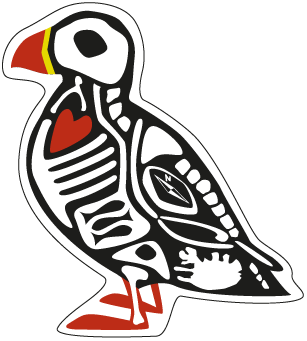

This week was spent mostly focused on site with one of our customers. It has been a great week of digging through massive data sets to try and find some interesting results.
This week we’ve also been lining-up meetings for next week like it’s going out of fashion. 8+ meetings already planned and more will certainly pop-up. This is all part of the getting back into full swing. There was a cheesy business book called “Dig your well before you’re thirsty”. While it isn’t a spectacularly insightful book, the best two take aways were the name and the idea of standing out. Digging your well before you’re thirsty seems pretty obvious. When you need water, or money, projects, referrals, recommendations, etc., it is probably too late. Spend some portion of your time making sure things are lined-up so you can dip into those resources when needed. A small amount of effort now can pay-off big in the future. In the last two weeks, we’ve gotten emails from contacts we’ve had for 3-4 years finally reaching out asking for our availability. The timing is great, but those emails didn’t just come from no-where. We’ve been following-up and checking-in with them periodically over the years too! Benjamin Franklin said “A stitch in time saves nine”. Which also applies to business as well as life.
We also received the test prints for our stickers and magnets of our lovely puffin design. Puffins are one of the few symbols people think of and refer too when talking about Iceland. Northern Lights and Nature being some of the others. We’ve spent a few years sitting on this design, doodling here and there on it. With the Christmas downtime, we pulled it out of our potential t-shirt list and worked-up a design that we could print. We’ve been super happy with the results so far. Our next steps is to get more feedback from friends, co-workers, and peers. Then we’ll see where we take it next.
On Saturday (technically in week #206) we attended a small unconference here in Iceland. It is always fun to meet-up with folks, see some of the usual faces, but also meet lots of new interesting and smart folks. There were three major sessions time slots and lots of different rooms and discussions going on at the same time. The ones that we stuck too were mostly around design, products, collaborative design and production. Some interesting ideas and discussions came out of the day. We got to meet some folks starting a stunt team, someone who sells high-end dog treats and dog leads, to restauranteurs looking to expand their business without hurting their product or brand. There is certainly another article we could write just about what’s happening in the start-up, innovation and entrepreneur world here in Iceland.
This week wasn’t devoid of meetings. We had an Analog.is planning meeting. We’ll have this more frequently now as we’ve got some interesting things in the works. We’re happy with where the project has gone and now we’re looking into ways to continue and pick-up the momentum. We also had a phone meeting about the Virkisfell project. We got in contact with some organisations in Norway which would benefit from the project and had a call. I think we both learnt a lot about the needs and capabilities of both our organisations. Overall, it has given us some good food for thought as we move forward. In week #208 we’ve lined-up a meeting with an Icelandic company to see how they can use the product. While we missed our February window for Virkisfell, we’re not planning on hitting the September deadline with much more confidence, a few companies behind us, a better prototype and much more informed about the real needs of the customers.
Bric-à-brac
Coelacanths are those fascinating pre-historic fish that somehow survived unto modern day undetected for thousands of years. In the 1930s they caught one of the southern coast of Africa and sent it to be preserved. During the process they found it was pregnant with 5 more babies. All six of these specimens where preserved, each in a different way.
Coelacanths are massively large too. It isn’t like we missed them for millions of years because they were small or in exotic places, they have been hiding in plain sight, partly because they taste bad to humans, we’ve never bothered about them since they didn’t serve us a direct purpose.